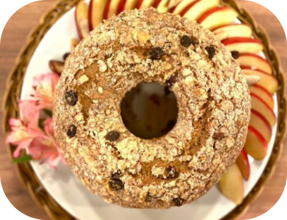

INGREDIENTES
COBERTURA
(Receita para uma forma de 20cm)
PASSO A PASSO
1
Em um boow coloque os ovos, óleo e açúcar, mexa bem os ingredientes com o fuet até dissolver todo o açúcar, acrescente a farinha peneirada com fermento e a canela e misture bem, acrescente as uvas passa, nozes e o sal, misture novamente e coloque em uma forma untada e enfarinhada.
2
Misture a manteiga, o açúcar, e a farinha até formar uma farofa, adicione a canela e coloque essa farofa por cima do bolo ainda cru, leve ao forno pré-aquecido 180° graus por 35 minutos.